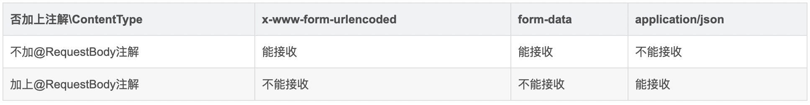

1.表单类型
MediaType，即是Internet Media Type，互联网媒体类型；也叫做MIME类型，在Http协议消息头中，使用Content-Type来表示具体请求中的媒体类型信息。Content-Type头部后面可以追加;charset=UTF-8指定编码格式,例如：Content-Type:x-www-from-urlencoded;charset=UTF-8
Content-Type字段表明了请求的请求体类型，可以是如下几种常见的类型：
1
2
3
4
5
6
7
8
9
10
11
12
13
14
15
16
17
18
|
常见媒体格式如下:
text/html ： HTML格式
text/plain ：纯文本格式
text/xml ： XML格式
image/gif ：gif图片格式
image/jpeg ：jpg图片格式
image/png ：png图片格式
multipart/form-data：（体数据被编码为一条消息，页上的每个控件对应消息中的一个部分，这个一般文件上传时用）
以application开头的媒体格式类型：
application/xhtml+xml ：XHTML格式
application/xml ： XML数据格式
application/atom+xml ：Atom XML聚合格式
application/json ： JSON数据格式
application/pdf ：pdf格式
application/msword ： Word文档格式
application/octet-stream ： 二进制流数据（如常见的文件下载）
application/x-www-form-urlencoded ： 默认的encType,form表单数据被编码为key/value格式发送到服务器（表单默认的提交数据的格式）
|
2.GET请求方式
读取get url中的queryString(查询字符串)
1
2
3
4
|
getParameterMap 读取参数的数组列表{k1:[],k2:[]}
getParameterValues 读取参数k的值列表数组[v1,v2,...]
getParameter 读取参数k的第一个值v1
getInputStream 读取http请求body内容
|
3.POST请求方式 application/x-www-form-urlencoded
会读取url中的queryString和请求body中的内容，进行合并
1
2
|
getParameterMap 读取合并的参数字典
getInputStream 为空
|
4.POST请求方式 application/json
会读取url中的queryString和请求body中的内容
1
2
|
getParameterMap 读取queryString参数的数组列表
getInputStream 读取json数据
|
1
|
增加@RequestBody注解 读取json数据
|
5.POST请求方式 multipart/form-data
会读取url中的queryString和请求body中的内容,主要用来处理上传数据
1
2
|
getParameterMap 读取queryString参数的数组列表
getInputStream 读取boundary指定分割符分割的内容
|
总结
综上所述，url中的queryString查询参数内容都能获取到的。http协议中请求Body中的内容可以根据不同的Content-Type来进行响应处理。
- 如果是text/plain 当作纯文本处理
- 如果是text/html 可以当作html来解析
- 如果是application/json 则用Json工具把请求体转换成json对象处理
- 如果是application/xml 则把Xml工具把请求体转换成xml对象处理
- 如果是application/x-www-form-urlencoded 则用kv工具把请求体转换成对应的格式
- 如果是multipart/form-data 则按照分割符和k，v协议处理
- 如果是application/octet-stream 则按照二进制进行处理
java servlet处理application/x-www-form-urlencoded这种格式比较方便，
处理其他的格式内容，需要自己解析请求数据，进行处理。
java spring有@RequestBody注解，可以把请求body中的json字符串对应到java pojo类上。
当请求中的ContentType分别为一下三种类型时，结果如下：

python flask 处理
1
2
3
4
5
6
7
8
9
10
11
12
13
14
|
self.req_param={}
#获取所有的请求参数
for k,v in request.values.iterlists():
if len(v)==1:
self.req_param[k]=v[0]
else:
self.req_param[k]=v
if request.is_json:
try:
self.req_param=dict(self.req_param,**dict(request.get_json()))
except Exception,ex:
pass
if str(request.content_type).find('text/plain')>-1:
self.req_param['data']=request.get_data()
|
python 框架request发送请求也有对应的设置方式
openResty lua 处理
1
2
3
4
5
6
7
8
9
10
11
12
13
14
15
16
17
18
19
20
21
22
23
24
25
26
27
28
29
30
31
32
33
34
35
36
37
38
39
40
41
42
43
44
45
46
47
48
49
50
51
52
53
54
55
56
57
58
59
60
61
62
63
64
65
66
67
68
69
70
71
72
73
74
75
76
77
78
79
80
81
82
83
84
85
86
87
88
89
90
91
92
93
94
95
96
97
98
99
100
101
102
103
104
105
106
107
108
109
110
111
112
113
114
115
116
117
118
119
120
121
122
123
124
|
queryString查询字符串的变量获取方式
ngx.var.arg_xxxx
例如
local name=ngx.var.arg_name
http协议请求体中body数据获取方式
-- requtil.lua
local type=type
local table=table
local string=string
local tostring=tostring
local tonumber=tonumber
local pairs=pairs
local ipairs =ipairs
local logdirlist= require("common.logdirlist")
local logutil=require("common.logutil")
local zlib=require("zlib")
--请求体的size大于nginx配置里的client_body_buffer_size，
--则会导致请求体被缓冲到磁盘临时文件里，
--client_body_buffer_size默认是8k或者16k
function getBodyData()
local retcode=true
local retdata=nil
ngx.req.read_body()
local bodydata=ngx.req.get_body_data()
if not bodydata then
local datafile=ngx.req.get_body_file()
if not datafile then
retcode=false
retdata='no request body found'
else
local fh, err = io.open(datafile, "r")
if not fh then
retcode=false
retdata="failed to open " .. tostring(datafile) .. "for reading: " .. tostring(err)
else
fh:seek("set")
retdata=fh:read("*a")
fh:close()
end
end
else
retdata=bodydata
end
local reqheaders=ngx.req.get_headers()
local encoding = reqheaders["content-encoding"]
if encoding=="gzip" and retdata~=nil then
local stream = zlib.inflate()
retdata=stream(retdata)
ngx.req.set_body_data(retdata)
end
return retcode,retdata
end
--获取请求的参数
function getReqParam()
local retcode=false
local retdata=nil
local args=nil
local reqbody=nil
local method=ngx.var.request_method
local reqheaders=ngx.req.get_headers()
local encoding=reqheaders["content-encoding"]
if method=='POST' then
local content_type=reqheaders['content-type']
if content_type~=nil and string.sub(content_type,1,20)=="multipart/form-data;" then
retcode,retdata=getBodyData()
args={}
args[1]=retdata
elseif content_type~=nil and string.sub(content_type,1,16)=="application/json" then
retcode,retdata=getBodyData()
if retcode and retdata~=nil then
reqbody=retdata
args=logutil.json_decode(retdata)
else
args=nil
end
elseif content_type~=nil and string.sub(content_type,1,33)=="application/x-www-form-urlencoded" then
if encoding=="gzip" then
retcode,retdata=getBodyData()
end
ngx.req.read_body()
args=ngx.req.get_post_args()
elseif content_type~=nil and (string.sub(content_type,1,5)=="text/" or string.sub(content_type,1,24)=="application/octet-stream") then
retcode,retdata=getBodyData()
if retcode and retdata~=nil then
args={}
args[0]=tostring(retdata)
else
args=ngx.req.get_uri_args()
if logutil.tableIsEmpty(args) then
args=nil
end
end
else
retcode,retdata=getBodyData()
args=ngx.req.get_post_args()
if retcode and retdata~=nil then
args=logutil.json_decode(retdata)
end
if args==nil then
args=ngx.req.get_post_args()
end
end
elseif method=='GET' then
if encoding=="gzip" then
retcode,retdata=getBodyData()
end
args=ngx.req.get_uri_args()
else
args=nil
ngx.exit(200)
end
if args==nil or type(args)~='table' or logutil.tableIsEmpty(args) then
args=ngx.req.get_uri_args()
end
ngx.ctx.args=args
ngx.ctx.reqbody=reqbody
end
|
php 处理请求参数
queryString查询字符串参数，
获取地址栏参数 $_SERVER['QUERY_STRING']
GET 方式 $_GET['a']
POST方式 $_POST['a']
任何方式: $_REQUEST['a']
对于http请求body中的数据
如果content-type是application/x-www-form-urlencoded，上报格式是k1=v1&k2=v2这种kv形式的数据
可以使用$b = $_POST['b'] 或 $_REQUEST['b']
如果content-type是multipart/form-data, 可以使用$_FILE['']
php://input ，$HTTP_RAW_POST_DATA 不能用于 enctype="multipart/form-data" 因为 php会试图解析所收到的数据，能解析就放入 $_POST, $_GET 数组里，不能解析，才会放到 php://input 里。
php://input比$HTTP_RAW_POST_DATA有更好的内存使用效率
file_get_contents(“php://input”);
url编码方法
对于地址栏中的queryString 查询字符串需要编码，
- 一种是和uri拼接成完整的url后，统一进行编码；
- 一种是queryString每个k对应的v值自己编码，uri如果有特殊字符则自己编码，然后拼接在一起
所以了解客户端如何对url进行编码的，对于服务端做解析相当重要。